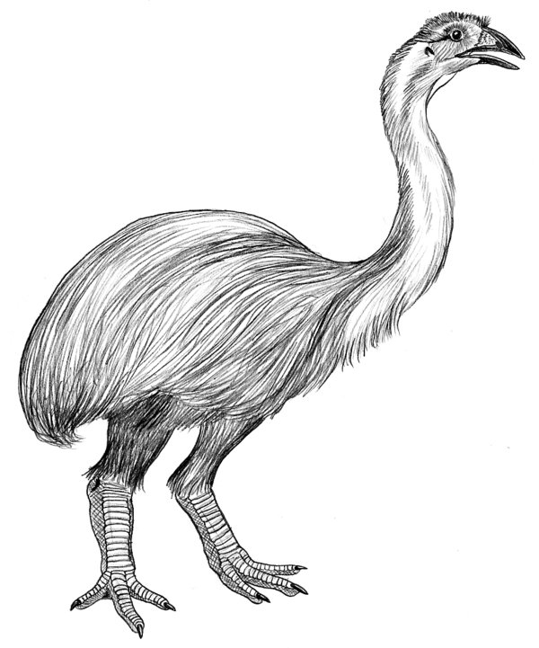

Finding an 'Extinct' New Zealand Bird
Rediscovered by a Persevering Doctor, the Flightless, Colorful Takahe, or 'Wanderer', Struggles to Survive
By R. V. Francis Smith
In New Zealand's rugged Fiordland a bird thought extinct for fifty years is struggling for survival. Behind the rare species in its fight for life is all the protective power of the Dominion Government. Rediscovery of this flightless bird, the large, brilliant-hued native rail which the Maoris called takahea, meaning "wandering at large," excited almost as much interest in New Zealand as discovery of a living passenger pigeon would arouse in America.
To zoologists and bird lovers throughout the world, reappearance of takahea, now called the takahe, was a notable event. They had a scientific name for the creature–Notornis hochstetteri, the first half of which means "bird of the south"–but they knew tantalizingly little about it and had considered it lost in the limbo of vanished species. To the rediscoverer, Dr. G. B. Orbell, a physician of Invercargill, New Zealand, the dramatic sight of a takahe alive came as the reward of years of patient and systematic search. Only four of the birds were known to science when he made his discovery on the shore of a lake in what is now called Notornis Valley. Since August, 1898, there had been no authentic report of one being caught, or even seen.
Futile Wings Have Three-Foot Span
A primitive type of large moor hen found only in New Zealand, the takahe is unlike any other member of the world-wide rail family to which it belongs. For example, despite its membership in an aquatic family, it avoids swamps and rivers. It does, however, share some of the clan 's characteristics, such as a large frontal shield. The full-grown takahe stands some twenty inches high and weighs about six pounds. The wings, though incapable of flight, may have a three-foot span.
The adult bird is vividly colored. Head, neck, breast, and flanks are an iridescent indigo blue, becoming brighter on the shoulders and changing to a malachite green on the mantle. The dark rump and upper tail coverts are olive green, the abdomen and thighs purplish black, and the under tail coverts white. The powerful beak is scarlet at the base, fading outwards to a wax pink. Legs and feet are red, eyes reddish brown. This brilliant color scheme is seen to full advantage only when the bird is approaching the observer or passing at right angles to him. In contrast to its showy parents, the young takahe wears only a uniform, soft black down. The black beak is white-tipped, and the disproportionately large legs are a pale purple.
In New Zealand's ornithological history, extinction, or near extinction, has been the lot of many species as a result of settlement.
"It originally occurred throughout forest and grass ecosystems. Today it is restricted to alpine tussock grasslands on the mainland and feeds primarily on juices from the bases of snow tussock and a species of fern rhizome. It eats introduced grasses on the islands. It usually lays two eggs and chicks can begin breeding at the end of their first year, but usually start in their second. It is long-lived, probably 14-20 years." - Heather and Robertson
In New Zealand's rugged Fiordland a bird thought extinct for fifty years is struggling for survival. Behind the rare species in its fight for life is all the protective power of the Dominion Government. Rediscovery of this flightless bird, the large, brilliant-hued native rail which the Maoris called takahea, meaning "wandering at large," excited almost as much interest in New Zealand as discovery of a living passenger pigeon would arouse in America.
Island |
Size(ha) |
Habitat |
Number of Takahe Pairs |
|---|---|---|---|
| Kapiti | 2023 | Mostly Forest | <10 |
| Mana | 217 | Mostly Grassland | >10 |
| Maud | 309 | Mixed Forest/Grass | 7-10 |
| Tiritiri | 210 | Mixed Forest/Grass | 10 |
Estimated carrying capacity of islands with Takahe.
Vanished Birds Include 12-Foot Moa
Before the arrival of Capt. James Cook in 1769, birds were the dominant land vertebrates. The only land mammals were the dog, a Polynesian rat, and two species of bats. The dog and rat had been introduced by the Maoris on their second migration, about A. D. 1150. After the Maoris had caused the extinction of the huge flightless moa, one species of which was twelve feet high, European settlement brought about more extensive changes. Ferrets, stoats, and weasels were introduced to control a plague of rabbits, and these, with cats, dogs, and other predators, virtually sealed the fate of numerous native species, among them the takahe. The first living takahe known to Europeans was purposely killed and eaten. It was caught by a sealing gang on Resolution Island, near the southwest end of South Island , in 1849. Two years later a party of Maoris caught a second bird in Thompson Sound, about forty miles farther north.
Luckily, the skins of both birds were obtained by Mr. W. D. B. Mantell, who in 1847 had discovered the semi fossil remains of the North Island variety (duly named Notornis mantelli by Sir Richard Owen, of London). The skins were sent to the British Museum. Twenty-eight years passed before another specimen appeared. A rabbiter's dog caught it near the south end of Lake Te Anau. The bird was destined for the cooking pot when it was rescued by a farm manager and eventually sold to a museum in Dresden, Germany, for £105.
After close examination, Dr. Adolph B. Meyer of the Dresden museum found that this bird was sufficiently different from the North Island semi fossil form found by Mantell to warrant a distinct name. Accordingly, the name Notornis hochstetteri was given the present species. The fourth specimen was caught by a dog on the shore of Middle Fiord of Lake Te Anau in 1898. The bird was bought by the Government for £250 to ensure that it remained in New Zealand. Preserved in the Otago Museum at Dunedin, it still is the only mounted specimen in the country, for no more takahe were known until Dr. Orbell's discovery.
Notornis Valley, in South Island's Murchison Mountains, lies only six miles from a main road; yet it hid the takahe from human sight for decades. From boyhood Dr. G. B. Orbell, an Invercargill physician, reiused to believe the creature lost. After thirty years his quest succeeded; Dr. Orbell tracked the takahe to the scene of its last stand in one of the wildest parts of the Dominion.
New Zealand Fiordland Shelters the Takahe, or Notornis, a Bird Long Thought Extinct
A Thirty-Year Quest Begins
Dr. Orbell's interest in the creature began more than thirty years ago when, as a boy, he found an old photograph showing the museum bird in a case. His mother told its story and explained that the bird was supposed to be extinct. That word "supposed" stimulated Dr. Orbell's adventurous spirit, and he learned all he could about the species. From game rangers and from men who had probed the fastnesses of Fiordland, from hearsay and from stories told around campfires on numerous hunting trips, Dr. Orbell picked up fragments of information about possible takahe hiding places.
In 1945 Dr. Orbell built a summer home at Lake Te Anau, where two of the birds had been caught. The question of the takahe's existence and whereabouts was always with him, but he seldom mentioned the matter except jokingly or as a bait to catch information. In this way he learned that a man who knew the country round about always carried his rifle loaded when in a certain area.
Dr. Orbell (Right) Brought the Takahe Back to Human Ken
Severe Winters Limit Food
From observations over three nesting seasons, it seems that most, if not ail, of the birds in the main Notornis Valley breed yearly, but very few chicks are hatched and raised. In the 1949-50 season, 40 percent of the observed eggs were totally infertile, only three chicks were hatched, and by February, 1950, only one remained alive. It is now known, however, that several birds besides those under observation were nesting.
The availability of snow grass and other food during severe winters, when the area is deeply covered with snow, is an important factor in the survival of the species. A dead adult bird, untouched by predators, was found in the main valley in the spring of 1949. This and other complete skeletons have suggested that starvation is a not uncommon cause of death.
The export-driven country, whose chief trading partner used to be the United Kingdom, faltered in 1973 when Britain joined the European Union. The loss of preferential treatment prompted a search for new markets. Japan, Australia, and the U.S. now buy half of all exports, which include wool, mutton, lamb, beef, cheese, fish, and chemicals. New Zealand plays an active role in helping democratic nations and emerging Pacific island economies. It sent troops to East Timor when violence broke out in 1999, and it provided millions of dollars to the South Pacific island of Niue after it was devastated by a tropical cyclone in 2004. Niue and the Cook Islands enjoy a status of self-government in free association with New Zealand.
New Zealand
New Zealand is a fertile and mountainous group of islands in the southwestern Pacific Ocean. "It is a land uplifted high," wrote Abel Tasman, a Dutch navigator who was the first European to sight New Zealand, in 1642. Snowy peaks, fjord-scarred shores, and pastures dotted with sheep define this country. New Zealand, a parliamentary democracy modeled on that of the United Kingdom, has been a self-governing British dominion since 1907. It became a founding member of the British Commonwealth in 1926.
One in three citizens—Kiwis—lives in or around the city of Auckland. Rugby clubs with names such as Canterbury and Wellington reveal a nation peopled mostly by descendants of British settlers. The indigenous Maori constitute about 15 percent of New Zealanders; recent immigrants—primarily from Samoa and Fiji—make Auckland one of the world's largest Polynesian cities.
The export-driven country, whose chief trading partner used to be the United Kingdom, faltered in 1973 when Britain joined the European Union. The loss of preferential treatment prompted a search for new markets. Japan, Australia, and the U.S. now buy half of all exports, which include wool, mutton, lamb, beef, cheese, fish, and chemicals. New Zealand plays an active role in helping democratic nations and emerging Pacific island economies. It sent troops to East Timor when violence broke out in 1999, and it provided millions of dollars to the South Pacific island of Niue after it was devastated by a tropical cyclone in 2004. Niue and the Cook Islands enjoy a status of self-government in free association with New Zealand.
| Fast Facts | More Information | ||
|---|---|---|---|
| 1 | Population | Source | 4,107,000 |
| 2 | Capital: Wellington | Source | 343,000 |
| 3 | Area | Source | 270,534 Square Kilometers (104,454 Square Miles) |
| 4 | Language | Source | English, Maori |
| 5 | Religion | Source | Protestant, Roman Catholic |
| 6 | Currency | Source | New Zealand Dollar |
| 7 | Life Expectancy | Source | In progress |
| 9 | GDP per Capita | Source | U.S. $20,100 |
| 10 | Literacy Percent | Source | 99 |
See, in the National Geographic Magazine: "The Columbus of the Pacific: Captain James Cook," by J. R. Hildebrand, January, 1927; and "Tuatara: 'Living Fossils' Walk on Well-Nigh Inaccessible Rocky Islands off the Coast of New Zealand," by Frieda Cobb Blanchard, May, 1935.
Copyright 1952. R. V. Francis Smith
Published by the National Geographic Society, Washington, D.C.
Article: Copyright, 1952, by National Geographic Society, Washington, D.C. International copyright secured. All rights reserved. Prin